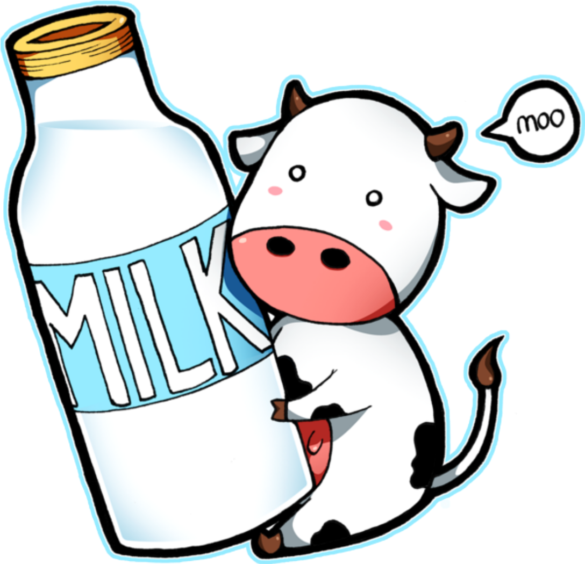

MILK

shree krishna dudh dairy
Shri Krishna Dudh Dairy is a 6 years old Proprietorship Firm incorporated on 02-Jun-2017, having its registered office located at indore Road satwas, dewas, Madhya Pradesh. The major activity of Shri Krishna Dudh Dairy is Services, Sub-classified into Food and beverage service activities and is primarily engaged in the Activities of food service contractors e g for transportation companies . Shri Krishna Dudh Dairy is classified as Micro enterprise in the financial year 2017-18 . It has its unit situated at satwas, Madhya Pradesh.
| Flat/Door/Block No. | Name of Premises/ Building | Village/Town |
|---|---|---|
| 72 | indore road satwas | main road satwas |
| Block | Road/Street/Lane | City |
| -- | indore road satwas | satwas |
| state | pin | ward no |
| Madhya Pradesh | 455459 | 6 |